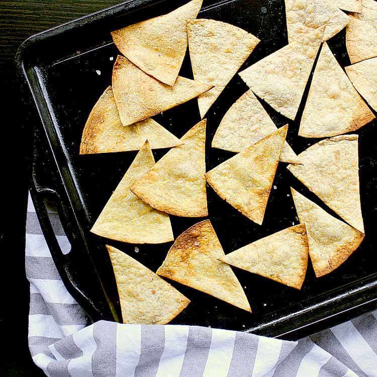

Low carb tortilla chips

Ingredients needed
- Almond Flour
- mozarella shredded cheese
- Parchment paper
- stove-top pan
Steps
- Mix 3/4 of almond flour and one cup of shredded mozarella into bowl
- Mix and microve in bowl for 30 seconds
- grease pan with a little olive oil
- mix bowl and microwave for another 30 seconds
- Knead into a flat dough that fits the pan and heat on medium until edges are brown
- flip as needed. top will be slightly brown when done. ETA 10 minutes.
- cut into small triangle chips. Will harden when cool. Enoy!